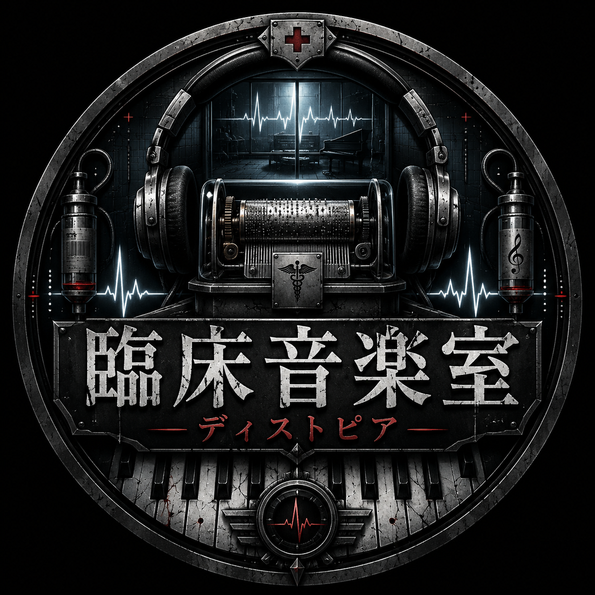

臨床
感情を観察し、痛みの輪郭を測定する。歌詞は問診票、メロディは心電図、沈黙は診断結果。
CLINICAL MUSIC ROOM / DYSTOPIA
「臨床音楽室・ディストピア」は、痛み・記憶・反撃・祈りを音に変換する架空研究室。 聴く者の心拍に触れる、暗く、美しく、少し危険な音楽実験場。

CONCEPT
感情を観察し、痛みの輪郭を測定する。歌詞は問診票、メロディは心電図、沈黙は診断結果。
ピアノ、ストリングス、ノイズ、合唱、歪んだギター。美しさと違和感を同じ部屋に閉じ込める。
壊れた世界を否定しない。灰の中で鳴る小さな音を拾い、次の扉へ進むための記録にする。
WORKS
TRILOGY
黒羽の夜、灰に差す月、暁を裂く羽。終わりの見えない夜から、次の物語へ進む三部作。
救いじゃないなら、毒でもいい。静かな痛みが、黒い羽根として檻を裂く。
夜を裂く黒い羽根。終焉さえも始まりの証として記録される。
ゴシックな恐怖と荘厳な旋律。悪夢は、逃げるものではなく演奏するもの。
THE ROOM
> load emotional_archive
> scan: loneliness / rage / memory
> convert_to_music()
> output: prescription accepted
CONTACT
Instagram、YouTube、Xなどのリンクをここに配置できる。